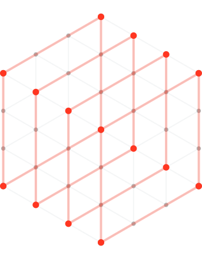
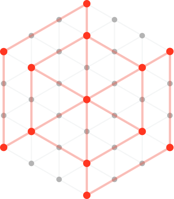
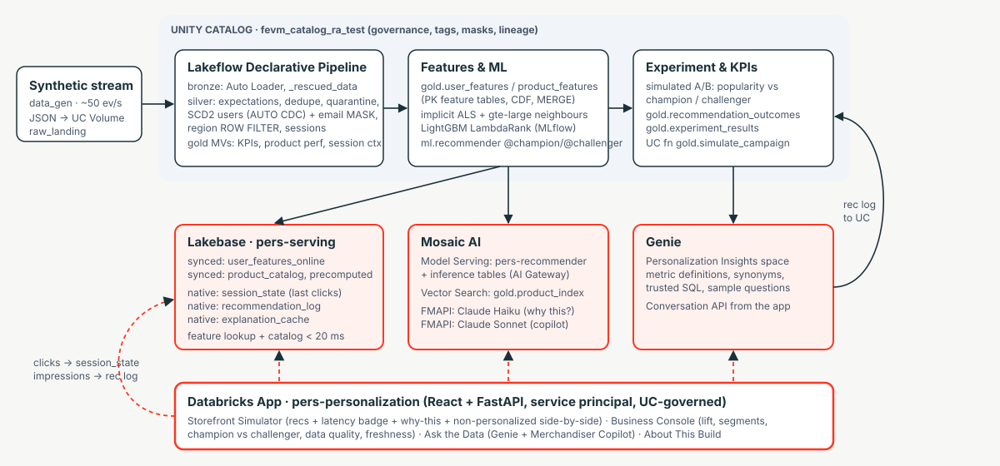

| Need | Stitched stack | Databricks |
|---|---|---|
| Fresh signals | Nightly batch features | Last 5 clicks read from Lakebase per request |
| Serving data | Separate database, custom ETL | Gold tables synced to Lakebase automatically |
| Governance | Rules re-built per system | Unity Catalog masks, filters, lineage |
| Explainability | None for the business | Grounded "why this?" for every recommendation |
| Insight | Analyst ticket, hours | Genie and a copilot, seconds |


| Layer | What the AI agent did | Human decision, and a fix caught in testing |
|---|---|---|
| Data and pipeline | Wrote the persona simulator, Lakeflow pipeline and masks | Set the 3% CTR baseline; first calibration gave 0.03% conversion, re-tuned in 3 runs |
| Models | Wrote ALS, embeddings and the LightGBM ranker in MLflow | Chose two-stage design; fixed an artifact crash from Spark Connect metadata |
| Serving | Wrote the endpoint, Lakebase sync and fallback path | Found every live call silently falling back; fixed the response parser |
| GenAI | Wrote the copilot, explanations and a 20-question eval | Grounding judge scored 10% without evidence; fixed to 20 of 20 |
| Metric | Owner | Baseline | Personalized | Target |
|---|---|---|---|---|
| Recommendation CTR | VP Merchandising | 3.1% | 6.1% | at least 6% |
| Session conversion | VP E-commerce | 1.93% | 2.84% to 3.30% | at least 2.6% |
| Cold-start conversion | CMO | 0.83% | 1.67% | at least 1.4% |
| Average order value | VP E-commerce, CFO | $57.92 | $56.47 to $60.34 | plus 5 to 8% |
| Latency | VP E-commerce | n/a | about 112 ms p50 | under 100 ms p95 |